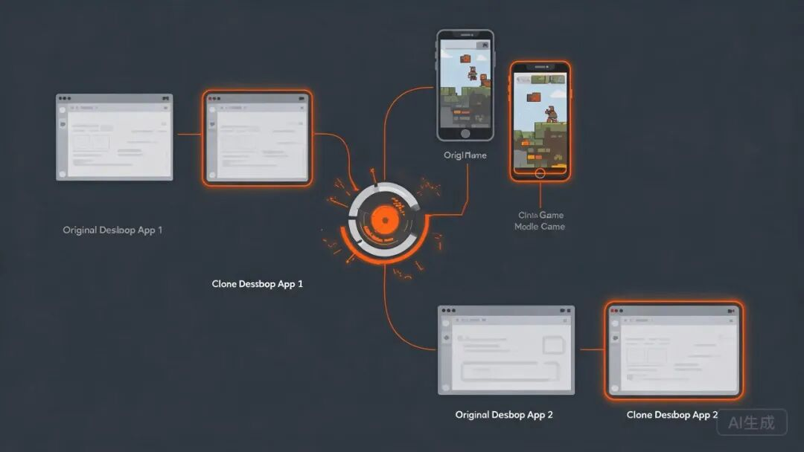
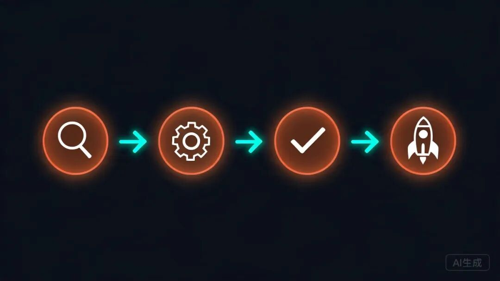
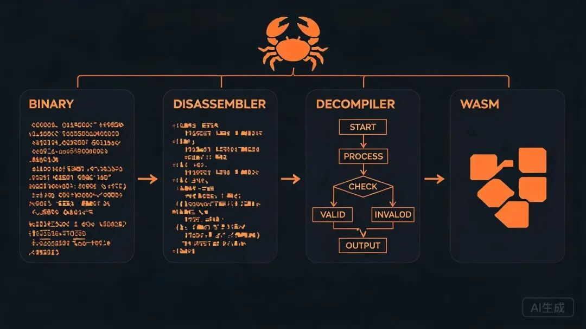

一句话结论
Craft Anything 是一个纯 Rust 写的开源引擎 + 桌面应用，你把一个网站、App 或游戏指给它，它先用真实的检查工具研究目标，再驱动本机 AI 编程助手（coding agent，即能读代码、写代码的智能体）重建一个属于你的版本，并拿结果和原版对比、反复迭代。它适合想快速复刻界面/交互做原型、或想搞懂某软件”是怎么做出来”的开发者；不适合没有 Rust 环境、没有 AI agent 账号、或目标软件你无权分析的人，最大代价是它自己不生成代码——最终成品质量取决于你接的底层模型，而不是它本身。
项目概览
项目由 storytold 团队（ArtCraft 系列作者）维护，截至 2026-11-16，GitHub 约 30.8k Star、6.3k Fork，采用 MIT 或 Apache-2.0 双协议，100% Rust 实现，支持 macOS、Windows、Linux、FreeBSD 和 Web（WebAssembly）。仓库创建于 2026-10-31，目前标注为早期 alpha。

Craft Anything 封面概念图
图 1：核心定位——指向任意软件，AI 在旁边重建一个干净版。
适用场景
·想快速复刻一个网站/小程序/桌面工具的外观与交互，做原型验证或学习。
·逆向分析原生程序、.NET/Java 程序、Android/苹果应用、Electron 页面、固件、抓包、数据库或游戏文件，把结果交给 agent 生成代码。
·需要一套可编程（MCP）的分析工具链，让 Claude Code、Copilot 等 agent 直接调用。
核心功能
四步闭环（Study → Build → Check → Ready）：先研究原版，再让 agent 建新项目，再对照原版检查并迭代，最后交付。它换来的是自动化、可反复 refine 的”复刻-校验”循环；代价是整套流程依赖你本机 agent 的推理能力，结果未必一步到位。
Clean room 与 Deep 两种模式：Clean room 默认不读原始代码，只凭截图、可见文本、测量出的布局来还原；Deep 模式则读取一切可用信息（安装了 Ghidra 时会用到）。它换来的是”没抄代码”的合规姿态；代价是 Clean room 只能还原看得见的东西，内部逻辑无法精确复刻。
约 320 个工具、CLI 与 MCP 双接口：引擎约 300 个工具，加上 AI/设置层共约 320 个，每个既是 CLI 子命令也是 MCP 工具，agent 可编程调用。它换来的是整套逆向与构建能力对 AI 开放；代价是早期 alpha 阶段，部分能力标注”built but not run live”，稳定性待验证。
纯 Rust 自研分析引擎：自带解码器、反汇编器、反编译器，覆盖原生程序、字节码、固件、抓包、数据库、游戏文件等。它换来的是跨平台与单二进制部署；代价是复杂、仍在快速迭代，且深度分析能力不及成熟的 Ghidra/IDA 生态。

四步工作流示意图
图 2：Study → Build → Check → Ready 四步闭环。
代价与限制
第一，它不生成代码，只是给 agent 提供”眼睛”和工具，你需要自己装 Claude Code 或 Codex/Copilot 等 agent，并配好账号与 API key，生成质量随底层模型波动。第二，编译需要 Rust 1.97+ 工具链，Linux 桌面版还依赖一批系统库，上手门槛高于纯网页工具。第三，安装第三方依赖时会在你机器上执行代码，存在供应链风险，需自行评估。第四，early alpha 阶段功能与 API 可能剧变，README 里不少能力仍在开发中。第五，法律与伦理边界要自己把握：它不绕过 DRM、登录、反作弊，重建也不复制 logo、照片、文本等受版权保护的内容，用户需确保有权分析目标软件。
约 320 个工具 / CLI + MCP 示意图
图 3：约 320 个工具同时暴露为 CLI 子命令与 MCP 工具，供 agent 调用。
快速部署
前置条件：Rust 1.97+，以及一个支持 MCP/ACP 的 AI coding agent（如 Claude Code、Codex、GitHub Copilot、Grok Build 等）。
gitclonehttps://github.com/storytold/craft-anything.git
cdcraft-anything
cargorun--release-pcraft-anything#启动桌面应用
#或只安装命令行工具
cargoinstall--pathapps/craft-anything-cli

纯 Rust 逆向分析引擎示意图
图 4：纯 Rust 实现的自研解码器、反汇编器、反编译器引擎。
对比
与直接让 Claude Code 或 GPT 写代码比，Craft Anything 给了 agent 真实的检查工具（反汇编、解码器、MCP），让它是”看懂了再做”而不是凭空猜；与 v0、Bolt 这类 AI 网页生成器比，它面向任意软件——原生 App、游戏、固件、数据库都行，不止网页；与传统逆向工具 Ghidra/IDA 比，它把逆向能力封装成 agent 可调用的工具，并接上 coding agent 的”建-查-改”闭环，代价是分析深度和成熟度还远不及老牌工具。
什么时候不该用：没有 Rust 环境、没有 AI agent 账号、目标软件你无权分析，或需要生产级稳定工具时。
仓库信息
·项目：storytold/craft-anything
·协议：MIT 或 Apache-2.0 双协议
·Star：约 30.8k / Fork：约 6.3k（截至 2026-11-16，取自 GitHub）
https://github.com/storytold/craft-anything
更新说明
本文基于 2026-11-16 采集的仓库信息与 README 撰写。项目极其年轻（创建于 2026-10-31），Star 数与功能变化快，AI 支持矩阵（Claude Code、Codex、Copilot、Grok 等）与命令参数可能随版本变动，实际使用请以官方 README 为准。